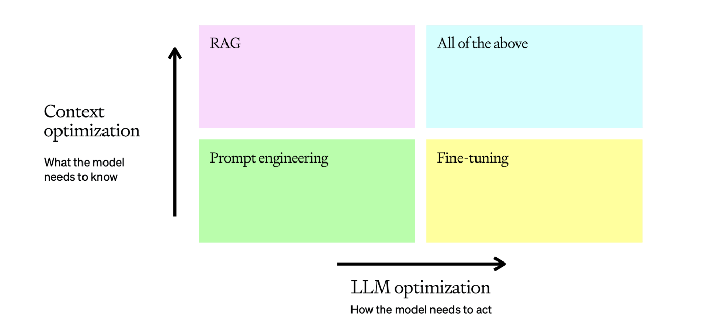

Optimizing LLM Accuracy#
Maximize correctness and consistent behavior when working with LLMs.
How to maximize correctness and consistent behavior when working with LLMs#
Optimizing LLMs is hard.
We’ve worked with many developers across both start-ups and enterprises, and the reason optimization is hard consistently boils down to these reasons:
Knowing how to start optimizing accuracy
When to use what optimization method
What level of accuracy is good enough for production
This page gives a mental model for how to optimize LLMs for accuracy and behavior. We’ll explore methods like prompt engineering, retrieval-augmented generation (RAG) and fine-tuning. We’ll also highlight how and when to use each technique, and share a few pitfalls.
As you read through, it’s important to mentally relate these principles to what accuracy means for your specific use case. This may seem obvious, but there is a difference between producing a bad copy that a human needs to fix vs. refunding a customer \(1000 rather than \)100. You should enter any discussion on LLM accuracy with a rough picture of how much a failure by the LLM costs you, and how much a success saves or earns you - this will be revisited at the end, where we cover how much accuracy is “good enough” for production.
LLM optimization context#
Many “how-to” guides on optimization paint it as a simple linear flow - you start with prompt engineering, then you move on to retrieval-augmented generation, then fine-tuning. However, this is often not the case - these are all levers that solve different things, and to optimize in the right direction you need to pull the right lever.
It is useful to frame LLM optimization as more of a matrix:

The typical LLM task will start in the bottom left corner with prompt engineering, where we test, learn, and evaluate to get a baseline. Once we’ve reviewed those baseline examples and assessed why they are incorrect, we can pull one of our levers:
Context optimization: You need to optimize for context when 1) the model lacks contextual knowledge because it wasn’t in its training set, 2) its knowledge is out of date, or 3) it requires knowledge of proprietary information. This axis maximizes response accuracy.
LLM optimization: You need to optimize the LLM when 1) the model is producing inconsistent results with incorrect formatting, 2) the tone or style of speech is not correct, or 3) the reasoning is not being followed consistently. This axis maximizes consistency of behavior.
In reality this turns into a series of optimization steps, where we evaluate, make a hypothesis on how to optimize, apply it, evaluate, and re-assess for the next step. Here’s an example of a fairly typical optimization flow:
In this example, we do the following:
Begin with a prompt, then evaluate its performance
Add static few-shot examples, which should improve consistency of results
Add a retrieval step so the few-shot examples are brought in dynamically based on the question - this boosts performance by ensuring relevant context for each input
Prepare a dataset of 50+ examples and fine-tune a model to increase consistency
Tune the retrieval and add a fact-checking step to find hallucinations to achieve higher accuracy
Re-train the fine-tuned model on the new training examples which include our enhanced RAG inputs
This is a fairly typical optimization pipeline for a tough business problem - it helps us decide whether we need more relevant context or if we need more consistent behavior from the model. Once we make that decision, we know which lever to pull as our first step toward optimization.
Now that we have a mental model, let’s dive into the methods for taking action on all of these areas. We’ll start in the bottom-left corner with Prompt Engineering.
Prompt engineering#
Prompt engineering is typically the best place to start**. It is often the only method needed for use cases like summarization, translation, and code generation where a zero-shot approach can reach production levels of accuracy and consistency.
This is because it forces you to define what accuracy means for your use case - you start at the most basic level by providing an input, so you need to be able to judge whether or not the output matches your expectations. If it is not what you want, then the reasons why will show you what to use to drive further optimizations.
To achieve this, you should always start with a simple prompt and an expected output in mind, and then optimize the prompt by adding context, instructions, or examples until it gives you what you want.
Optimization#
To optimize your prompts, I’ll mostly lean on strategies from the Prompt Engineering guide in the OpenAI API documentation. Each strategy helps you tune Context, the LLM, or both:
Strategy |
Context optimization |
LLM optimization |
|---|---|---|
Write clear instructions |
X |
|
Split complex tasks into simpler subtasks |
X |
X |
Give GPTs time to “think” |
X |
|
Test changes systematically |
X |
X |
Provide reference text |
X |
|
Use external tools |
X |
These can be a little difficult to visualize, so we’ll run through an example where we test these out with a practical example. Let’s use gpt-4-turbo to correct Icelandic sentences to see how this can work.
Prompt engineering for language corrections#
We’ve seen that prompt engineering is a great place to start, and that with the right tuning methods we can push the performance pretty far.
However, the biggest issue with prompt engineering is that it often doesn’t scale - we either need dynamic context to be fed to allow the model to deal with a wider range of problems than we can deal with through adding content to the context, or we need more consistent behavior than we can achieve with few-shot examples.
Deep dive#
Using long context to scale prompt engineering#
Long-context models allow prompt engineering to scale further - however, beware that models can struggle to maintain attention across very large prompts with complex instructions, and so you should always pair long context models with evaluation at different context sizes to ensure you don’t get lost in the middle. “Lost in the middle” is a term that addresses how an LLM can’t pay equal attention to all the tokens given to it at any one time. This can result in it missing information seemingly randomly. This doesn’t mean you shouldn’t use long context, but you need to pair it with thorough evaluation.
One open-source contributor, Greg Kamradt, made a useful evaluation called Needle in A Haystack (NITA) which hid a piece of information at varying depths in long-context documents and evaluated the retrieval quality. This illustrates the problem with long-context - it promises a much simpler retrieval process where you can dump everything in context, but at a cost in accuracy.
So how far can you really take prompt engineering? The answer is that it depends, and the way you make your decision is through evaluations.
Evaluation#
This is why a good prompt with an evaluation set of questions and ground truth answers is the best output from this stage. If we have a set of 20+ questions and answers, and we have looked into the details of the failures and have a hypothesis of why they’re occurring, then we’ve got the right baseline to take on more advanced optimization methods.
Before you move on to more sophisticated optimization methods, it’s also worth considering how to automate this evaluation to speed up your iterations. Some common practices we’ve seen be effective here are:
Using approaches like ROUGE or BERTScore to provide a finger-in-the-air judgment. This doesn’t correlate that closely with human reviewers, but can give a quick and effective measure of how much an iteration changed your model outputs.
Using GPT-4 as an evaluator as outlined in the G-Eval paper, where you provide the LLM a scorecard to assess the output as objectively as possible.
If you want to dive deeper on these, check out this cookbook which takes you through all of them in practice.
Understanding the tools#
So you’ve done prompt engineering, you’ve got an eval set, and your model is still not doing what you need it to do. The most important next step is to diagnose where it is failing, and what tool works best to improve it.
Here is a basic framework for doing so:
You can think of framing each failed evaluation question as an in-context or learned memory problem. As an analogy, imagine writing an exam. There are two ways you can ensure you get the right answer:
You attend class for the last 6 months, where you see many repeated examples of how a particular concept works. This is learned memory - you solve this with LLMs by showing examples of the prompt and the response you expect, and the model learning from those.
You have the textbook with you, and can look up the right information to answer the question with. This is in-context memory - we solve this in LLMs by stuffing relevant information into the context window, either in a static way using prompt engineering, or in an industrial way using RAG.
These two optimization methods are additive, not exclusive - they stack, and some use cases will require you to use them together to use optimal performance.
Let’s assume that we’re facing a short-term memory problem - for this we’ll use RAG to solve it.
Retrieval-augmented generation (RAG)#
RAG is the process of Retrieving content to Augment your LLM’s prompt before Generating an answer. It is used to give the model access to domain-specific context to solve a task.
RAG is an incredibly valuable tool for increasing the accuracy and consistency of an LLM - many of our largest customer deployments at OpenAI were done using only prompt engineering and RAG.
In this example we have embedded a knowledge base of statistics. When our user asks a question, we embed that question and retrieve the most relevant content from our knowledge base. This is presented to the model, which answers the question.
RAG applications introduce a new axis we need to optimize against, which is retrieval. For our RAG to work, we need to give the right context to the model, and then assess whether the model is answering correctly. I’ll frame these in a grid here to show a simple way to think about evaluation with RAG:
You have two areas your RAG application can break down:
Area |
Problem |
Resolution |
|---|---|---|
Retrieval |
You can supply the wrong context, so the model can’t possibly answer, or you can supply too much irrelevant context, which drowns out the real information and causes hallucinations. |
Optimizing your retrieval, which can include: |
LLM |
The model can also get the right context and do the wrong thing with it. |
Prompt engineering by improving the instructions and method the model uses, and, if showing it examples increases accuracy, adding in fine-tuning |
The key thing to take away here is that the principle remains the same from our mental model at the beginning - you evaluate to find out what has gone wrong, and take an optimization step to fix it. The only difference with RAG is you now have the retrieval axis to consider.
While useful, RAG only solves our in-context learning issues - for many use cases, the issue will be ensuring the LLM can learn a task so it can perform it consistently and reliably. For this problem we turn to fine-tuning.
Fine-tuning#
To solve a learned memory problem, many developers will continue the training process of the LLM on a smaller, domain-specific dataset to optimize it for the specific task. This process is known as fine-tuning.
Fine-tuning is typically performed for one of two reasons:
To improve model accuracy on a specific task: Training the model on task-specific data to solve a learned memory problem by showing it many examples of that task being performed correctly.
To improve model efficiency: Achieve the same accuracy for less tokens or by using a smaller model.
The fine-tuning process begins by preparing a dataset of training examples - this is the most critical step, as your fine-tuning examples must exactly represent what the model will see in the real world.
Many customers use a process known as prompt baking, where you extensively log your prompt inputs and outputs during a pilot. These logs can be pruned into an effective training set with realistic examples.
Once you have this clean set, you can train a fine-tuned model by performing a training run - depending on the platform or framework you’re using for training you may have hyperparameters you can tune here, similar to any other machine learning model. We always recommend maintaining a hold-out set to use for evaluation following training to detect overfitting. For tips on how to construct a good training set you can check out the guidance in our Fine-tuning documentation. Once training is completed, the new, fine-tuned model is available for inference.
For optimizing fine-tuning we’ll focus on best practices we observe with OpenAI’s model customization offerings, but these principles should hold true with other providers and OSS offerings. The key practices to observe here are:
Start with prompt-engineering: Have a solid evaluation set from prompt engineering which you can use as a baseline. This allows a low-investment approach until you’re confident in your base prompt.
Start small, focus on quality: Quality of training data is more important than quantity when fine-tuning on top of a foundation model. Start with 50+ examples, evaluate, and then dial your training set size up if you haven’t yet hit your accuracy needs, and if the issues causing incorrect answers are due to consistency/behavior and not context.
Ensure your examples are representative: One of the most common pitfalls we see is non-representative training data, where the examples used for fine-tuning differ subtly in formatting or form from what the LLM sees in production. For example, if you have a RAG application, fine-tune the model with RAG examples in it so it isn’t learning how to use the context zero-shot.
All of the above#
These techniques stack on top of each other - if your early evals show issues with both context and behavior, then it’s likely you may end up with fine-tuning + RAG in your production solution. This is ok - these stack to balance the weaknesses of both approaches. Some of the main benefits are:
Using fine-tuning to minimize the tokens used for prompt engineering, as you replace instructions and few-shot examples with many training examples to ingrain consistent behaviour in the model.
Teaching complex behavior using extensive fine-tuning
Using RAG to inject context, more recent content or any other specialized context required for your use cases
Using these tools to improve language translation
Now you should have an appreciation for RAG and fine-tuning, and when each is appropriate. The last thing you should appreciate with these tools is that once you introduce them there is a trade-off here in our speed to iterate:
For RAG you need to tune the retrieval as well as LLM behavior
With fine-tuning you need to rerun the fine-tuning process and manage your training and validation sets when you do additional tuning.
Both of these can be time-consuming and complex processes, which can introduce regression issues as your LLM application becomes more complex. If you take away one thing from this paper, let it be to squeeze as much accuracy out of basic methods as you can before reaching for more complex RAG or fine-tuning - let your accuracy target be the objective, not jumping for RAG + FT because they are perceived as the most sophisticated.
How much accuracy is “good enough” for production#
Tuning for accuracy can be a never-ending battle with LLMs - they are unlikely to get to 99.999% accuracy using off-the-shelf methods. This section is all about deciding when is enough for accuracy - how do you get comfortable putting an LLM in production, and how do you manage the risk of the solution you put out there.
I find it helpful to think of this in both a business and technical context. I’m going to describe the high level approaches to managing both, and use a customer service help-desk use case to illustrate how we manage our risk in both cases.
Business#
For the business it can be hard to trust LLMs after the comparative certainties of rules-based or traditional machine learning systems, or indeed humans! A system where failures are open-ended and unpredictable is a difficult circle to square.
An approach I’ve seen be successful here was for a customer service use case - for this, we did the following:
First we identify the primary success and failure cases, and assign an estimated cost to them. This gives us a clear articulation of what the solution is likely to save or cost based on pilot performance.
For example, a case getting solved by an AI where it was previously solved by a human may save $20.
Someone getting escalated to a human when they shouldn’t might cost $40
In the worst case scenario, a customer gets so frustrated with the AI they churn, costing us $1000. We assume this happens in 5% of cases.
Event |
Value |
Number of cases |
Total value |
|---|---|---|---|
AI success |
+20 |
815 |
$16,300 |
AI failure (escalation) |
-40 |
175.75 |
$7,030 |
AI failure (churn) |
-1000 |
9.25 |
$9,250 |
Result |
+20 |
||
Break-even accuracy |
81.5% |
The other thing we did is to measure the empirical stats around the process which will help us measure the macro impact of the solution. Again using customer service, these could be:
The CSAT score for purely human interactions vs. AI ones
The decision accuracy for retrospectively reviewed cases for human vs. AI
The time to resolution for human vs. AI
In the customer service example, this helped us make two key decisions following a few pilots to get clear data:
Even if our LLM solution escalated to humans more than we wanted, it still made an enormous operational cost saving over the existing solution. This meant that an accuracy of even 85% could be ok, if those 15% were primarily early escalations.
Where the cost of failure was very high, such as a fraud case being incorrectly resolved, we decided the human would drive and the AI would function as an assistant. In this case, the decision accuracy stat helped us make the call that we weren’t comfortable with full autonomy.
Technical#
On the technical side it is more clear - now that the business is clear on the value they expect and the cost of what can go wrong, your role is to build a solution that handles failures gracefully in a way that doesn’t disrupt the user experience.
Let’s use the customer service example one more time to illustrate this, and we’ll assume we’ve got a model that is 85% accurate in determining intent. As a technical team, here are a few ways we can minimize the impact of the incorrect 15%:
We can prompt engineer the model to prompt the customer for more information if it isn’t confident, so our first-time accuracy may drop but we may be more accurate given 2 shots to determine intent.
We can give the second-line assistant the option to pass back to the intent determination stage, again giving the UX a way of self-healing at the cost of some additional user latency.
We can prompt engineer the model to hand off to a human if the intent is unclear, which costs us some operational savings in the short-term but may offset customer churn risk in the long term.
Those decisions then feed into our UX, which gets slower at the cost of higher accuracy, or more human interventions, which feed into the cost model covered in the business section above.